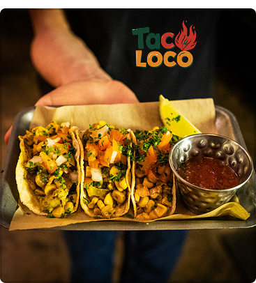
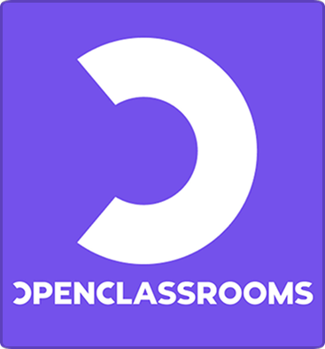
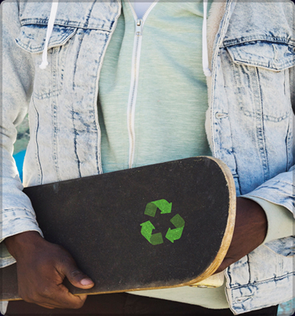
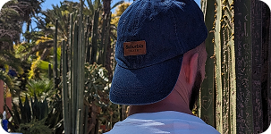
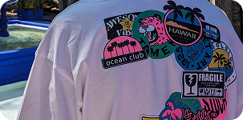
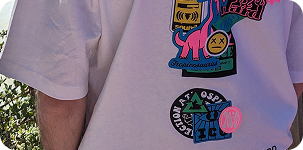

PROJETS 1

Taco Loco
Taco Loco est un projet UI conçu pour valoriser l’univers d’un food truck de tacos mexicains. L’objectif est de renforcer l’image de marque à travers une interface moderne, colorée et immersive, mettant en avant les produits phares, l’ambiance artisanale et l’authenticité de la street food latino.
PROJETS 2

Audit UX/UI
J’ai réalisé un audit UX de la page d’accueil d’OpenClassrooms afin d’évaluer l’ergonomie, la clarté du parcours utilisateur et l’efficacité des éléments d’interface. L’analyse met en avant une identité forte et une navigation claire, tout en suggérant des améliorations sur les contrastes, les espaces blancs et les appels à l’action.
PROJETS 3

Wallpin' Ride
Wallpin’Ride est un projet personnel fictif que j’ai présenté dans le cadre de ma formation. Il repose sur un concept original : donner une seconde vie aux planches de skate en les transformant en objets déco muraux. Le nom combine "wall" (mur), "pin" (accrocher) et fait référence à la figure de skate "wall ride", qui consiste à rouler sur un mur. J’ai imaginé et conçu le design du site ainsi qu’un plan marketing complet autour de ce concept, dans l’objectif de valoriser la culture skate tout en lui apportant une dimension durable et artistique.
COMPÉTENCES
Soft Skills
- Sociable et curieux, j'apprécie les échanges d'idées et la diversité des perspectives.
- Passionné par le travail collaboratif, j’aime partager des idées et contribuer à des projets communs.
- Capacité à m'ajuster rapidement à de nouveaux environnements, outils ou méthodes de travail.
Hard Skills
- Conception d'interfaces intuitives.
- Intégration responsive
- Création de sites web ergonomiques
À PROPOS



Titre professionnel
- Développeur web et web mobile
- Concepteur Designer UI
- Passionné par les interfaces intuitives et épurées, je m'inspire beaucoup du Swiss Design. Mes compétences en développement web me permettent de donner vie à mes concepts.
- Je suis actuellement à la recherche d'une entreprise qui me permettra d'apprendre davantage, de relever de nouveaux défis et de m'épanouir dans un environnement créatif.
- Hâte de travailler avec vous et de contribuer à vos projets !